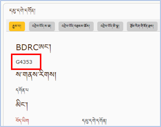
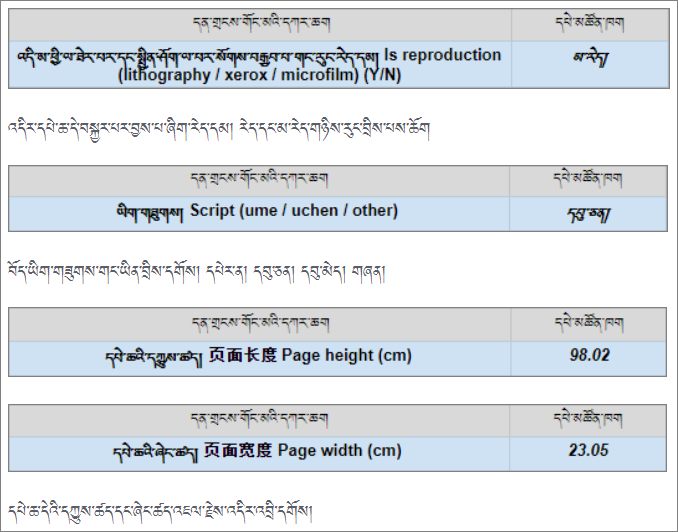
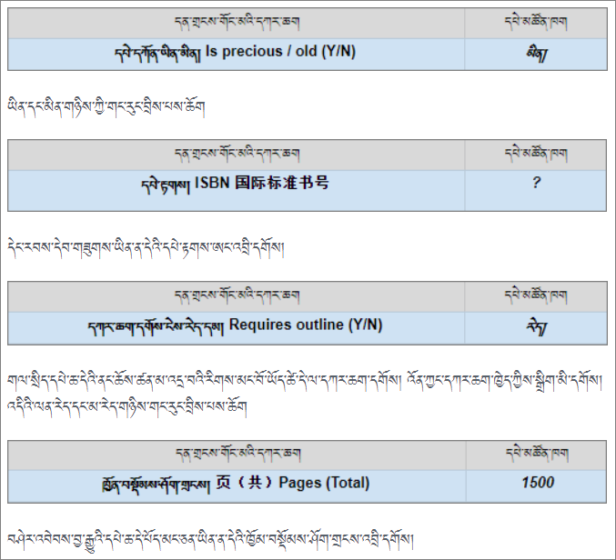
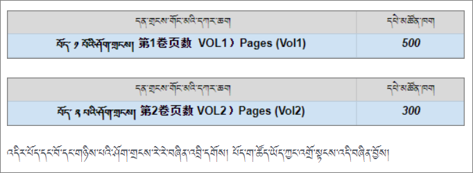
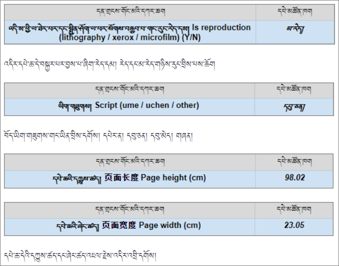
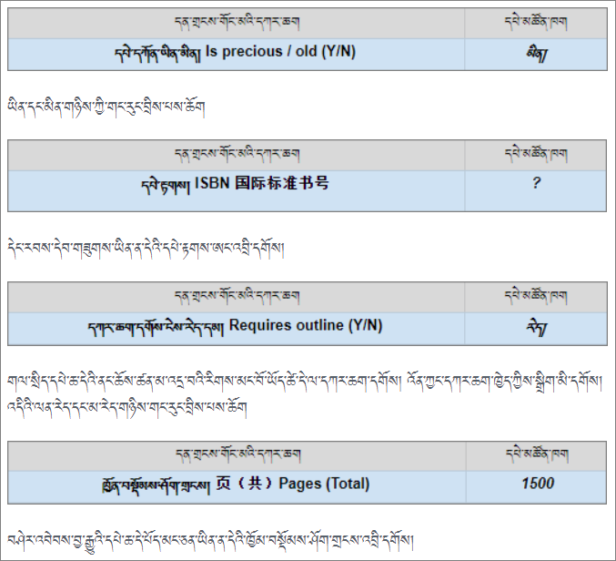
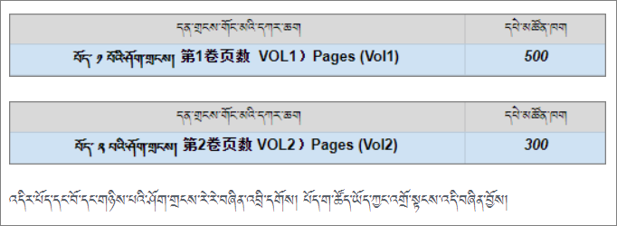

ཁྱེད་ཀྱིས་བཤེར་འབེབས་བྱ་བཞིན་པའི་དཔེ་ཆ་དེ་དང་ཐད་ཀར་འབྲེལ་བའི་དན་གྲངས་གོང་མའི་རེའུ་མིག་འགེང་སྐབས་ངེས་པར་འགེང་དགོས་པ་དང་གདམ་གསེས་བྱ་ཆོག་པའི་དཔེ་མཚོན་རིགས་ཤེས་དགོས།
བྱེ་བྲག་གི་བརྩམས་ཆོས་སམ་པར་མ་དེ་དང་འབྲེལ་བའི་གནས་ཚུལ་ཁག
སྤྱིར་ནང་བསྟན་དཔེ་ཚོགས་ལྟེ་གནས་ཀྱིས་དཔེ་མཛོད་དང་དགོན་པ་པར་ཁང་སོགས་ས་གནས་མང་བོ་ཞིག་ལ་Gཡོད་པའི་ཨང་གྲངས་རེ་སྤྲད་ཡོད།
ཚོགས་པའི་དྲ་ཚིགས་ནང་ས་ཆ་དེའི་ཨང་ཡོད་ཚེ་དེ་བྲིས་པས་ཆོག དྲ་ཚིགས་ནང་བཙལ་སྟངས་ཀྱི་དཔེ་མཚོན། འདིར་སྣུན།
| དགོན་པའི་ཨང་གྲངས་ཀྱི་དཔེ་མཚོན། | པར་ཁང་གི་ཨང་གྲངས་དཔེ་མཚོན།
| - | -
|  |  > |
> |

 




